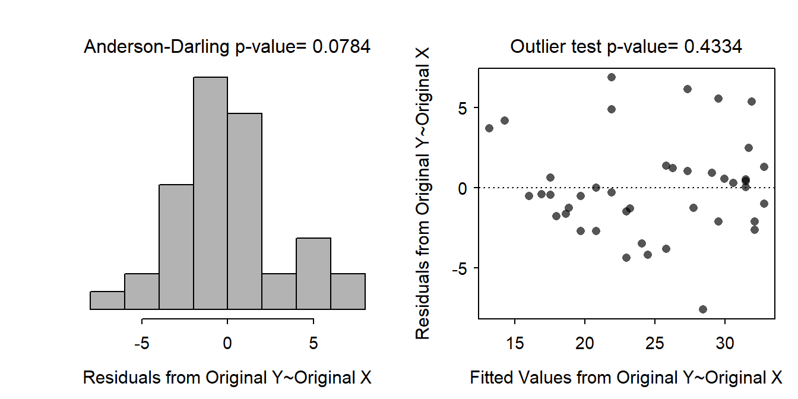

Car Horsepower and Gas Mileage II
- The cars appear to be independent as no car make was used twice and they were all of different makes and models.
- No non-linearity was detected as the residual plot does not exhibit a distinct curvature (Figure 1-Left).
- The residual plot does show a very slight heteroscedasticity (Figure 1-Right). This is likely not enough to worry about.
- The Anderson-Darling test shows weak but insignificant evidence for non-normality (p=0.0784) and the histogram of residuals is approximately symmetric (Figure 1-Left).
- There are no significant outliers according to the outlier test (p=0.4334). There is also no evidence for any outliers on the histogram of residuals (Figure 1-Left).

Figure 1: Histogram of residuals (left) and residual plot (right) for regression of miles per gallon on horsepower in the cars study.
R Appendix.
car <- read.csv("CarMPG.csv")
lm1 <- lm(mpg~hp,data=car)
transChoser(lm1)